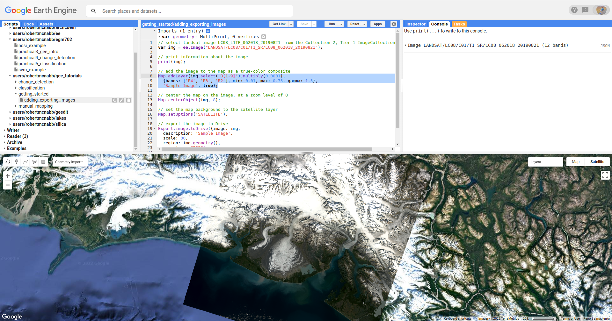
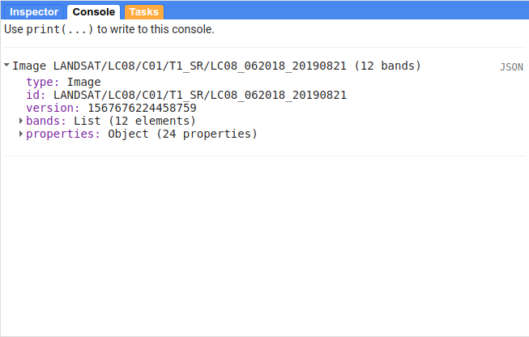
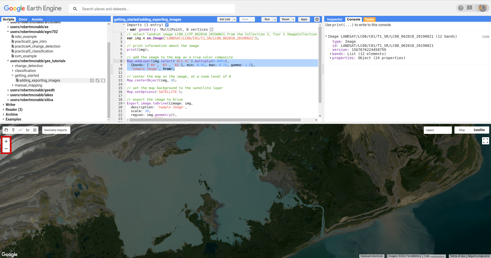
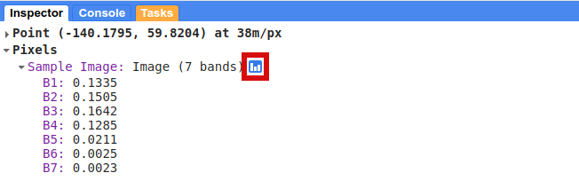
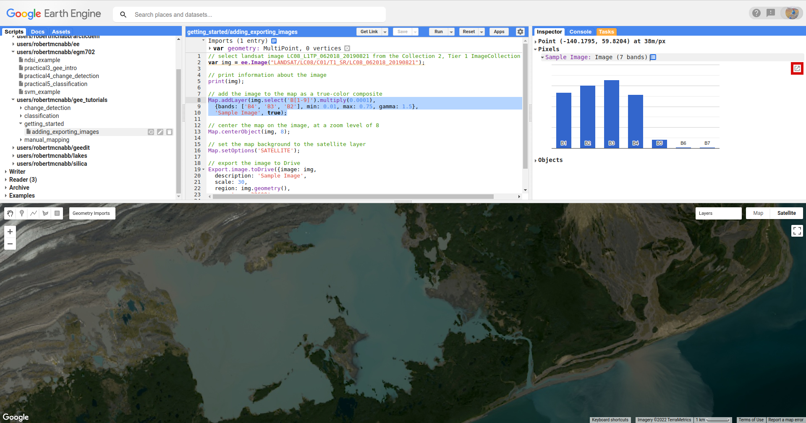
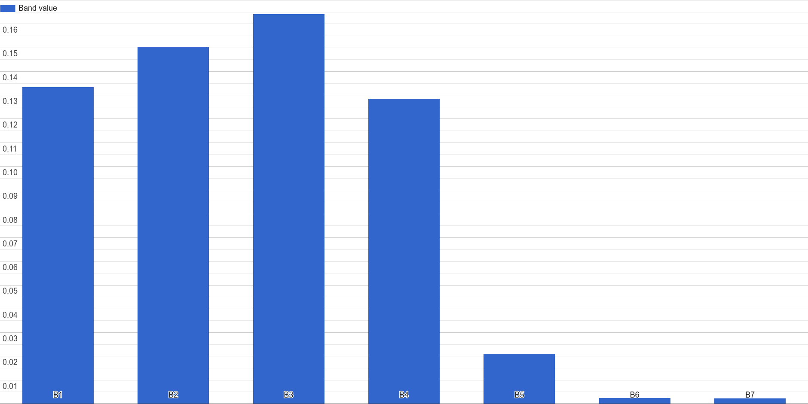
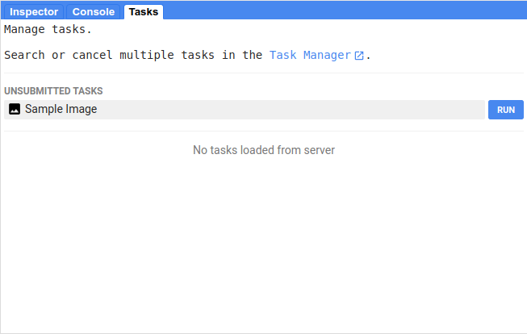
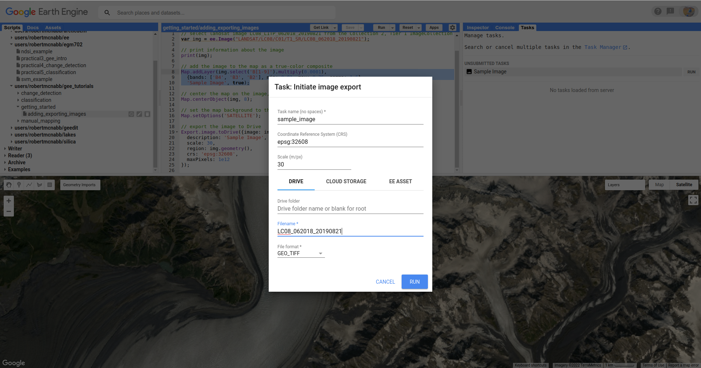

adding and exporting images
This tutorial is designed to get you started looking at satellite images using Google Earth Engine. By the end of the tutorial, you will be able to:
add images to the map and change the display properties
use the print() function to view image metadata
use the inspector tool to examine pixel values
export data to google drive
To begin, point your browser to https://code.earthengine.google.com. If you are not already logged in, log in using your GEE account. You should see something like this:

The Code editor is where you can write your script to load data and process your results; the Map is where you can view images and other datasets, and the Console is where you can see outputs, charts, and other things that you print out.
To see the sample script for this tutorial, follow this link.
landsat
For this example, we’re using a Landsat 8 image showing the Malaspina Glacier (Sít’ Tlein) and surrounding area in Alaska (USA) and Canada.
The sensor carried by Landsat 8 is the Operational Land Imager/Thermal InfraRed Sensor (OLI/TIRS). The table below shows the wavelength ranges for the different bands of the sensor(s), their resolutions, and their names:
sensor |
band |
wavelength (µm) |
name |
resolution (m) |
oli |
1 |
0.43 – 0.45 |
coastal aerosol |
30 |
2 |
0.45 – 0.51 |
blue |
30 |
|
3 |
0.53 – 0.59 |
green |
30 |
|
4 |
0.64 – 0.67 |
red |
30 |
|
5 |
0.85 – 0.88 |
near infrared |
30 |
|
6 |
1.57 – 1.65 |
shortwave infrared 1 |
30 |
|
7 |
2.11 – 2.29 |
shortwave infrared 2 |
30 |
|
8 |
0.50 – 0.68 |
panchromatic |
15 |
|
9 |
1.36 – 1.38 |
cirrus |
30 |
|
tirs |
10 |
10.6 – 11.19 |
thermal infrared 1 |
100 |
11 |
11.5 – 12.51 |
thermal infrared 2 |
100 |
For information about the band designations for the other Landsat sensors, see this page from the USGS: https://www.usgs.gov/faqs/what-are-band-designations-landsat-satellites
adding images to the map
Note
For this example, I’m using the Collections 1 Surface Reflectance product, because there appear to be some issues with the Collection 2 Surface Reflectance product masking out otherwise valid pixels (see, e.g., this example).
I will update the tutorial and the script if/when the issue gets resolved, but for now we’ll stick with the C1 datasets.
If we know the GEE id of the image we want to use, we can add it directly to the script by declaring it as a variable, using ee.Image():
var img = ee.Image("LANDSAT/LC08/C01/T1_SR/LC08_062018_20190821");
Note
The Earth Engine id of Landsat images is not the same as the USGS granule id - if you know the USGS id of the image you want, you’ll need to “translate” it to the GEE catalog.
As an example, the image we’re using here has a GEE id of:
dataset/sensor/C**collection**/tier/sensor_PPPRRR_YYYYMMDDLANDSAT/LC08/C02/T1/LC08_062018_20190821
and a USGS granule id of:
sensor_level_PPPRRR_YYYYMMDD_processed_collection_tierLC08_L1TP_062018_20190821_20200827_02_T1
For more information about the naming convention(s), you can check out the following page from USGS: https://www.usgs.gov/faqs/what-naming-convention-landsat-collection-2-level-1-and-level-2-scenes
Now, we can use the img variable in our script, and add it to the Map window:
// add the image to the map as a true-color composite
Map.addLayer(img.select('B[1-9]').multiply(0.0001),
{bands: ['B4', 'B3', 'B2'], min: 0.01, max: 0.75, gamma: 1.5},
'Sample Image', true);
There’s quite a bit happening here. First, we’re using Map.addLayer()
(click here for the documentation)
to add the image to the Map. Map.addLayer() has the following syntax:
Map.addLayer(eeObject, visParams, name, shown, opacity)
where:
eeObjectis the object that we want to add to the MapvisParamstells GEE how to display the objectnameis the name we want to use for the layershowntells GEE to display the image (true) or not (false)and
opacityis the opacity of the layer ranging from 0–1.
So, the object that we’re adding to the map is:
img.select('B[1-9]').multiply(0.0001)
This selects bands B2, B3, and B4 from img, then multiplies each band by 0.0001
to convert from the raw DN values to reflectance values.
Next, the visParams that we’re adding is:
{bands: ['B4', 'B3', 'B2'], min: 0.01, max: 0.75, gamma: 1.5}
This tells the map to display bands 4, 3, and 2 as an RGB (making this a natural color composite).
We also set the min(imum) display value to 0.01, and the max(imum) display value to 0.75. We also apply
a gamma correction to help brighten the image somewhat.
Finally, we give the layer a name ('Sample Image'), and tell GEE to display the image (true).
The next part of the example script:
// center the map on the image, at a zoom level of 8
Map.centerObject(img, 8);
// set the map background to the satellite layer
Map.setOptions('SATELLITE');
uses Map.centerObject() (documentation) to center the Map
on the image at a zoom level of 8, and uses Map.setOption() (documentation)
to set the basemap to use satellite imagery, rather than the default basemap.
Once you run the script (click Run, or press CTRL + Enter), you should see the following:
{kind=link}
changing display parameters
In addition to setting the display parameters for the layer in the script, we can also change the display parameters after the script is finished running.
When you mouse over the Layers button in the upper right of the Map panel, you should see a single layer (Sample Image). If you click on the gear icon, you can open the visualization parameters for each image and adjust them - for example, by applying a 98% stretch instead of a custom range:

To change the bands that are displayed, you can select the different bands to make an RGB combination from the dropdown menus; you can also choose to display the image as a single-band (grayscale) image.
You can also adjust the transparency slider for the different layers displayed here, and by checking/unchecking the box next to the layer name, you can make either image visible/invisible.
Finally, you can use the Import button to save the current settings as an import that you can use in the script - we’ll talk a bit more about imports in a later tutorial.
In order to apply any changes, click on the Apply button, then Close to close the visualization settings window.
the print function
The script also contains the following line:
// print information about the image
print(img);
This will print the information about the image to the Console. If you expand the list (click on the small arrow), you should be able to see the following:
{kind=link}
You can expand the bands list to see the different bands available in the image, while the properties object contains all of the different metadata for the image. In later tutorials, we’ll actually use this metadata for selecting and processing images; for now, it’s enough to look at it and get familiar with it.
the inspector tool
Now that we’ve added an image to the Map, we can zoom around the map (scroll in/out, or use the +/- buttons on the left side of the map) to examine it further:
{kind=link}
Here, we’ve zoomed in on Malaspina Lake, between the glacier and the ocean more or less in the middle of the image.
To examine (or inspect) different pixel or feature values for the layers in the map, we can use the Inspector tab. Click on the Inspector tab, then click on the map window somewhere in the lake. You should see something like the following in the Inspector tab (note that it probably won’t be exactly the same):

This shows the list view for the Inspector tool - for each layer, and each band, it will list the pixel value where you’ve clicked, based on the current scale.
You can also click on the chart symbol next to the layer name:
{kind=link}
To swap between the list and chart views:
{kind=link}
From the chart view, you can also click the highlighted button to open the chart in a new window, where you can download the chart as an SVG or PNG file, or the data as a comma-separated variable (CSV) file:
{kind=link}
You can spend some time moving around the map and viewing the output of the Inspector tool - be sure to pay attention to the reflectances in different bands for different surfaces. What surfaces have the highest reflectance values? In what bands?
exporting data
At the very end of the script, I’ve included the following:
// export the image to Drive
Export.image.toDrive({image: img,
description: 'Sample Image',
scale: 30,
region: img.geometry(),
crs: 'epsg:32608',
maxPixels: 1e12
});
This calls Export.image.toDrive() (documentation),
which creates a Task that you can run to save the image to your Google Drive.
If you click on the Tasks tab, you should see the following:
{kind=link}
Here, you can see the different Tasks created by the script - in this case, we have one Task that has not yet been submitted, to export the image to Google Drive.
Note
GEE will not initiate Tasks automatically - you will need to submit the task before the image will actually be exported.
When you click RUN, you will see the following dialogue:
{kind=link}
This allows you to enter a filename for your export, choose which folder to export the file to, and so on. When you’ve entered the necessary information and are happy, you can click RUN again.
In general, running the task might take some time, depending on the size of the image. You can click the ‘Refresh’ button in the Tasks tab to check the status to see if it’s finished running.
That’s all for this tutorial - by now, you should be able to add an image to the Map, use the Inspector tool to investigate pixel and feature values in the Map window, and Export an image from GEE to your Google Drive.
In the next tutorial, we’ll see how you can build on this to examine the surface reflectance values of various surface types.